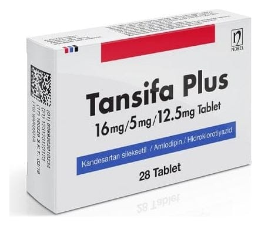

Tansifa Plus 16 mg/5 mg/12.5 mg Tablet, 28 Adet

Ne için kullanılır
KT · Bölüm 1İlacınızın ismi TANSİFA PLUS’tır ve 28 tabletlik ambalajlarda pazarlanmaktadır. Her bir tablet 16 mg kandesartan sileksetil, 5 mg amlodipine eşdeğer amlodipin besilat ve 12,5 mg mikronize hidroklorotiyazid içerir.
TANSİFA PLUS yüksek kan basıncının tedavisinde kullanılmaktadır (hipertansiyon tedavisinde). Üç adet etken madde içermektedir: Kandesartan sileksetil, amlodipin ve hidroklorotiyazid. Bu üç etken madde kan basıncınızın düşürülmesinde birlikte rol almaktadırlar.
• Kandesartan sileksetil, 'anjiyotensin II reseptör antagonisti' adı verilen bir ilaç grubuna aittir. Kan damarlarınızı gevşetmekte ve genişletmektedir. Bu da kan basıncınızın düşmesine yardımcı olmaktadır. • Hidroklorotiyazid, 'diüretikler' (idrar söktürücüler) adı verilen bir ilaç grubuna aittir. Vücudunuzdan suyun ve sodyum gibi tuzların idrar ile uzaklaştırılmasına yardımcı olur. Bu da kan basıncınızın düşmesini sağlar.
• Amlodipin, kalsiyum kanal blokörleri sınıfına ait bir maddedir. Damar düz kas hücrelerinin kalsiyum kanallarını bloke eder; bu da, kan damarlarının kasılmasını önler.
Doktorunuz TANSİFA PLUS'ı, kan basıncınızın tek başına kandesartan, amlodipin veya kandesartan/amlodipin kombinasyonu ile düşürülemediği durumlarda reçete edebilir.